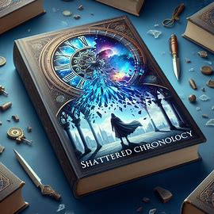

The Plot Spot Online Bookstore
Enjoy our collection of the most amazing short stories on the web! Click the link to download them.
Download Story: The Crimson Enigma
 Download Story: The Crimson Enigma (MP3)
Download Story: The Crimson Enigma (MP3)
Isabel stared at the bizarre crimson marking emblazoned on the inner wall of the subterranean chamber. It seemed to pulse with an eerie, arcane luminescence.
She reached out to trace the intricate, sigil-like design, but Vahid firmly gripped her arm. "Don't!" The lead archaeologist's face was grim. "We don't know what that symbol represents or what it's capable of."
All around them, the freshly excavated ruins exuded a palpable sense of ancient power and nameless ceremonies. This Byzantine site allegedly housed an obscure cult dating back millennia.
"The hieroglyphs and iconography don't match any known texts," Vahid said, running his hand through his sweat-dampened hair. "We're in uncharted archaeological territory here."
Isabel studied the strange crimson symbol anew. At its center Almost like a faint heartbeat or some eldritch astronomy chart. "Have you ever seen anything like this before?"
Vahid shook his head grimly. "It's a complete enigma. One that seems to defy all rational categorization."
As if in response, the image pulsed again - bioluminescent tendrils extending outwards like the petals of a forbidden flower in full bloomrisome. A coruscating flare of energy shot through the chamber, causing Isabel's skin to prickle with metaphysical apprehension.
"Mother of god..." Vahid whispered, grip tightening on his cyber-camera rig.
Outside the temporal cycle dictated by the enigma had begun.
Answers would finally be unearthed. Whether they could withstand the revelation was another matter entirely.
Summary: While excavating an ancient cult's Byzantine ruins, archaeologists uncover a pulsating crimson symbol that defies all understanding - an enigmatic manifestation that heralds the start of an eldritch rite tied to unknowable cosmic powers.

Download Story: Unveiling the Vortex
Download Story: Unveiling the Vortex (MP3)
Professor Abrams stared at the swirling mass of energy contained within the magnetic field chamber. After years of theoretical research and simulations, they were finally on the cusp of unveiling the secrets of the vortex.
The microscopic whirlpool of exotic particles defied the known laws of physics. Conventional models couldn't account for the vortex's bizarre properties - its capacity to warp space-time and distort reality itself.
Abrams adjusted her calibrations, slowly increasing the power output. Radiation levels spiked as the vortex began to rotate faster, glowing with an ethereal luminescence. The entire lab seemed to subtly vibrate.
She held her breath, mentally preparing herself. They had to pierce the metaphysical veil somehow. Too much was still unknown about this anomaly.
With a deep exhale, Abrams initiated the quantum field disruptor. A focused beam of energy lanced into the vortex's core. For an eternal moment, nothing happened.
Then, reality fractured.
The vortex pulsed and rapidly expanded, engulfing the chamber in roiling energies. Abrams shielded her eyes as the lab's magnetic containment fields fought to restrain the vortex's exponential growth.
When she looked up, a shimmering rupture had formed - a portal into parts unknown. She couldn't breathe. They had done it. The vortex had been unveiled.
A strange harmony echoed from the cosmic rift. Was that... beckoning? Abrams's mind raced. What lay on the other side? What secrets would they finally uncover?
Summary: A brilliant physicist is on the verge of a reality-shattering breakthrough as her experiment to unlock the secrets of a bizarre space-time vortex leads to the unveiling of a cosmic rift - a gateway to unknown realms that beckons with both terror and wonder.
Download Story: The Obsidian Codex
Download Story: The Obsidian Codex (MP3)
Arika brushed away the thick layer of dust covering the onyx-black stone tablet. Her fingers traced the raised etchings - undeciphered glyphs and symbols from a long-forgotten civilization.
This was it. The legendary Obsidian Codex.
For centuries, the codex's existence was merely a whispered myth among academics and archaeologists. A primordial repository said to contain the fundamental truths of the universe itself. But Arika's team had finally uncovered it from the volcanic cavernsdark beneath the ancestral Xama ruins.
As she carefully lifted the weighty artifact, an embedded gemstone pulsed with a faint inner light. Energy trickled up her arms like a metamorphic awakening.
Arika gasped. The markings on the codex's surface began shifting and realigning into new permutations. The dead language took on life.
"This... this is impossible," her colleague Sayid murmured, stunned by the transformation.
But Arika had felt a cosmic stirring. The codex was reactingto her essence. Recognizing her as the prophesied Conduit described in the ancient legends.
A low subterranean rumble shuddered through the cavern. The codex's crystalline heart blazed brilliantly, illuminating the primeval chamber. Arika's consciousness expanded, her mind overflowing with primordial wisdom and forbidden cosmic insight as she embraced the forsaken knowledge.
Reality itself seemed to unfurl around them like a lotus blossom. The obsidian etchings now made sense. Arika finally understood their transcendent message.
Everything had been leading to this revelation. The truth would finally be known.
Summary: After unearthing a mythical obsidian tablet said to contain the fundamental truths of the universe, an archaeologist becomes the unwitting conduit through which the primordial artifact's reality-altering powers and cosmic secrets are unleashed.
Download Story: Shattered Chronology
Download Story: Shattered Chronology (MP3)
Agent Diaz blinked in disorientation as his surroundings abruptly changed. One moment he was trapped in the crumbling ruins, pinned by the amber energy discharge. The next, he was... elsewhere.
And elsewhen.
He stood in the middle of a suburban park, children playing on the swings and pedestrians strolling by without a care. But the casual scene bordered on the surreal - modern glass towers stretched into the skyline alongside ancient pyramids and turn-of-the-century factories belching smoke.
The temporal displacement had to be exponential this time. History's threads were frayed and realities intermingled chaotically.
A brilliant azure flash in the distance signaled the arrival point he needed. Diaz sprinted ahead, people flickering in and out of existence around him with each shifted moment.
He reached the stabilized chrono-zone just as the nexus opened. A shimmering rift tore through the fabric of space-time. On the other side awaited the twisted abomination that called itself Lord Entropy.
The paradox psychic force bent on erasing all of existence.
Diaz engaged his chronokinetic stabilizers and leapt through the portal. He tumbled across the fractured plane of the time-vortex, dodging shards of shattered pasts and futures that fractaled all around him.
There was Entropy, an amalgamation of multiple pasts and presents. With a roar of defiance, Diaz unleashed his chronon charges, firing directly into the splintered abomination's vortex.
Space and time shrieked in anguish, collapsing in on itself as Entropy's entropic forces clashed against Diaz's causality restoratives. For a single moment, the cosmos held its breath.
Then, with a cataclysmic implosion, chronology was remade.
Summary: A temporal agent must leap through the fractured shards of reality itself to stop a paradox-fueled abomination from erasing all of existence, battling across splintered pasts, presents, and futures where history has been shattered into chaos.

Download Story: Echoes of Eternity
Download Story: Echoes of Eternity (MP3)
Astral Explorer Kian drifted in the void between realms, untethered from physical reality. The vast expanses of the multiverse surrounded him in endless night, speckled with pulsing possibilities.
Closing his eyes, he opened his extrasensory receptors and listened to the resonant harmonics. The music of eternity's song whispered all around him - ageless vibrations from the dawn of existence itself.
Kian followed the cosmic rhythms, allowing them to guide his astral form through the transdimensional ocean. Eons of history washed over his consciousness in crashing waves. He witnessed the birth cries of newborn universes and the final entropic gasps of realities reaching cosmic entropy.
Infinite worlds blossomed and faded in melancholic cycles, like flowers blooming and withering in accelerated time-lapses. But through it all, Kian sensed the indomitable pulse. The eternal refrain underlying all of creation's movements.
Carried by the primordial rhythms, he soared through a transcendent kaleidoscope of unified realms and fractal dimensions. He became a celestial witness to the grand choreographies of spacetime and universal harmonics.
Raw elemental forces danced around him in torrents of stellar fire and spectral light. Entire galactic empires flickered like cosmic flames in the grander scales. Even the most monumental events were but fleetingechoes in eternity's endless song.
As Kian basked in the fundamental musicalities permeating all that is, was, and ever could be, he finally experienced the truth of infinite belonging. His spirit became one with the reverberating chords and perfect symmetries of existence's eternal rhythm.
And in that transcendent moment of epiphany and immutable stillness, he was eternity itself.
Summary: An astral explorer untethered from the physical realm drifts through the vast cosmic ocean, witnessing the grand symphony of creation's rhythms and experiencing a transcendent union with the eternal harmonics underlying all of existence itself.